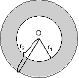

Dairenin Alanı ve Çevresi
Bu ders notumuzda dairede alan ve uzunluk olayını inceleyeceğiz. İyi dersler…
| O merkezli ve r yarıçaplı bir dairede
|
|
2. Daire Diliminin Alanı ve Yay Parçasının Uzunluğu
| O merkezli dairede m(AOB) = a olacak şekilde taralı dairediliminin alanı,
|
|
3. Daire Kesmesinin Alanı
| O merkezli dairede taralı alan, daire diliminin alanındanBOA üçgeninin alanının çıkarılması ile bulunur.
|
|
4. Daire Halkasının Alanı
| O merkezli r1 ve r2 yarıçaplı çemberler arasında kdairenin alanının çıkarılması ile bulunur.Taralı Alan = pr22 – pr12p ortak parantezinde
|
 |
- O merkezli ve r yarıçaplı daire diliminde yay uzunluğuna
|AB| = l dersek
|
|